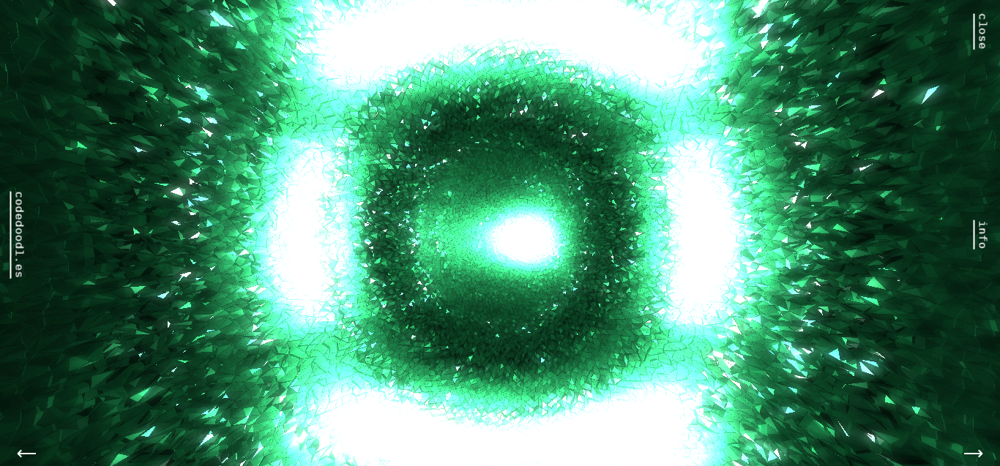
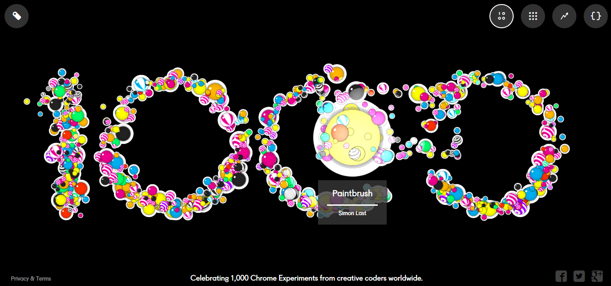

This Codedoodles site shows great user interaction. It is easy to navigate as a first time vistor and you discover more options as you play around. The crystal changes based on your cursor movement and you can zoom in and out for different views. Aesthetically, the website uses vivid colors and a clean display.
The "1000" is interactive with your cursor. Each bubble represents a project. When you hover over, it has a simple description and the artist. When you click into it, it has a game, image, etc. To go back to the main screen and make another selection, the "x is brightly colored and easily accessible.
